Plot Standing-Katz low-pressure lp charts
2017-10-08
Plot a Standing-Katz curve
If we invoke the function getStandingKatzCurve without any parameters, by defult it will use a Tpr=1.3 for the low-pressure set of Tpr curves and plot it.
library(zFactor)
sk <- getStandingKatzCurve()
If we want to specify a Tpr curve:
library(zFactor)
getStandingKatzCurve(tpr = 1.05, toSave = FALSE, toView = FALSE)
Or for a couple of Tpr curves, we specify a vector with 2 or more components:
library(zFactor)
tpr_vec <- c(1.05, 1.1)
result <- getStandingKatzCurve(tpr = tpr_vec, toSave = FALSE, toView = FALSE)
A dataframe for each Tpr dataset
The returning object of getStandingKatzCurve is a list of dataframes, which contains a dataframe for each of the Tpr curves specified:
class(result) # class of the object `result` is a list of dataframes
names(result) # name of each dataframe within the list[1] "list"
[1] "1.05" "1.1" For Tpr = 1.05:
library(tibble)
as.tibble(result[["1.05"]])# A tibble: 52 x 5
Ppr z isNear Ppr_near diff
* <dbl> <dbl> <lgl> <dbl> <dbl>
1 0.204 0.937 TRUE 0.200 4.000000e-03
2 0.300 0.905 TRUE 0.300 -5.551115e-17
3 0.405 0.866 TRUE 0.400 5.000000e-03
4 0.504 0.829 TRUE 0.500 4.000000e-03
5 0.602 0.790 TRUE 0.600 2.000000e-03
6 0.700 0.748 TRUE 0.700 -1.110223e-16
7 1.000 0.589 TRUE 1.000 0.000000e+00
8 1.203 0.440 TRUE 1.200 3.000000e-03
9 1.301 0.350 TRUE 1.300 1.000000e-03
10 1.332 0.319 FALSE 1.332 0.000000e+00
# ... with 42 more rowsAnd, for Tpr = 1.1:
as_tibble(result[["1.1"]])# A tibble: 86 x 5
Ppr z isNear Ppr_near diff
* <dbl> <dbl> <lgl> <dbl> <dbl>
1 0.225 0.942 FALSE 0.225 0.000
2 0.253 0.933 FALSE 0.253 0.000
3 0.279 0.926 FALSE 0.279 0.000
4 0.321 0.912 FALSE 0.321 0.000
5 0.349 0.903 FALSE 0.349 0.000
6 0.378 0.895 FALSE 0.378 0.000
7 0.415 0.882 FALSE 0.415 0.000
8 0.444 0.874 FALSE 0.444 0.000
9 0.456 0.869 FALSE 0.456 0.000
10 0.504 0.854 TRUE 0.500 0.004
# ... with 76 more rows
Plot all the lp Standing-Katz curves
Or we can plot all the lp Standing-Katz curves:
# view all the `Tpr` SK individual charts
tpr_vec <- getStandingKatzTpr(pprRange = "lp")
result <- getStandingKatzCurve(tpr_vec, toSave = FALSE, toView = FALSE) 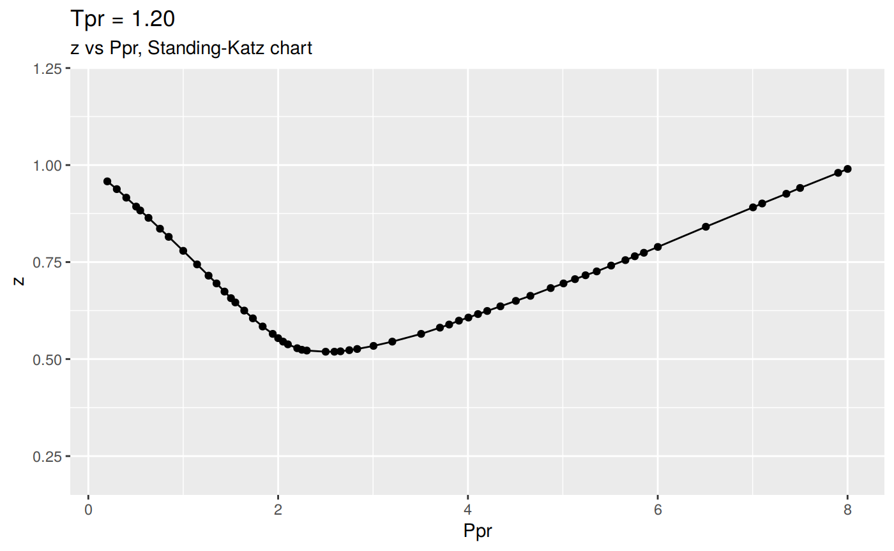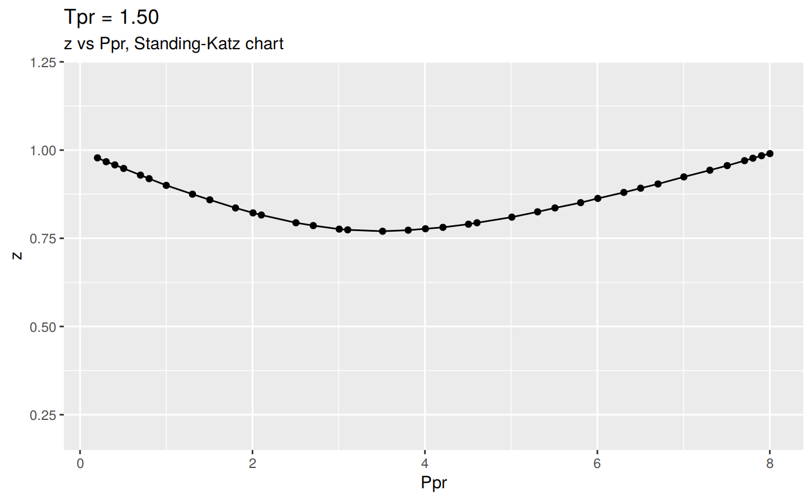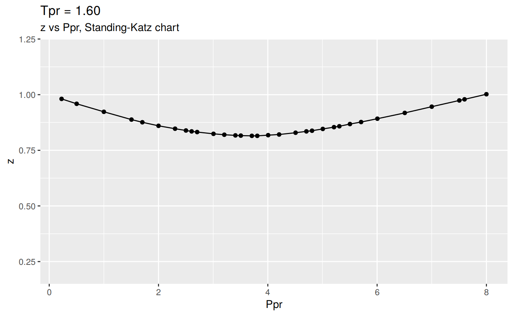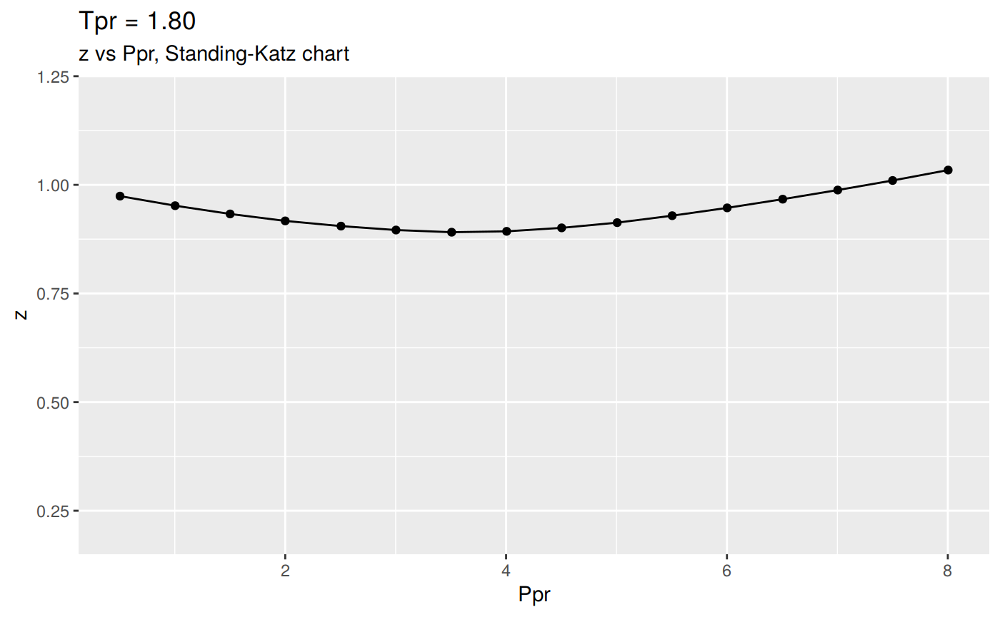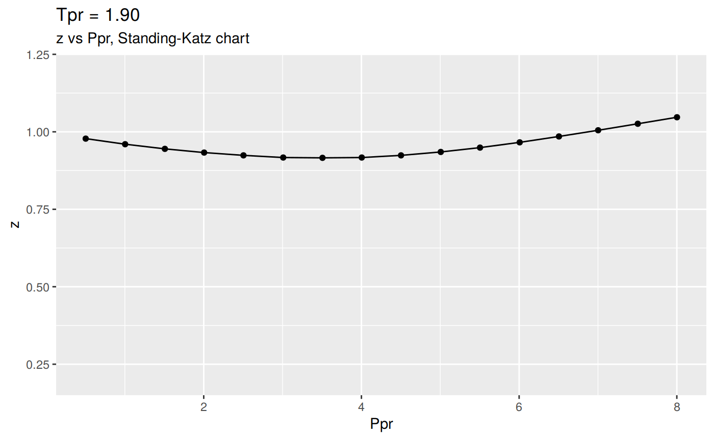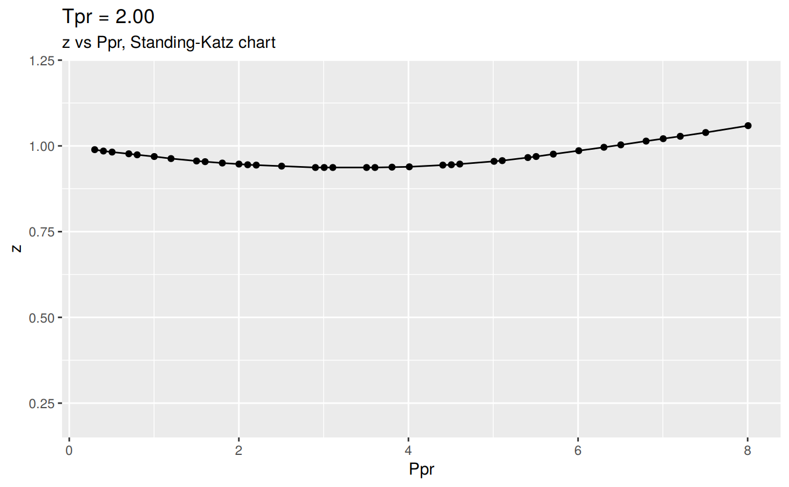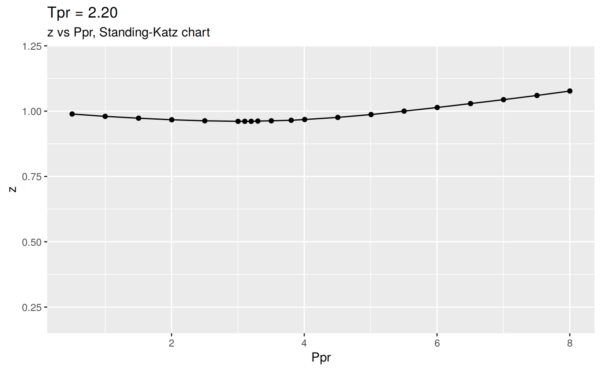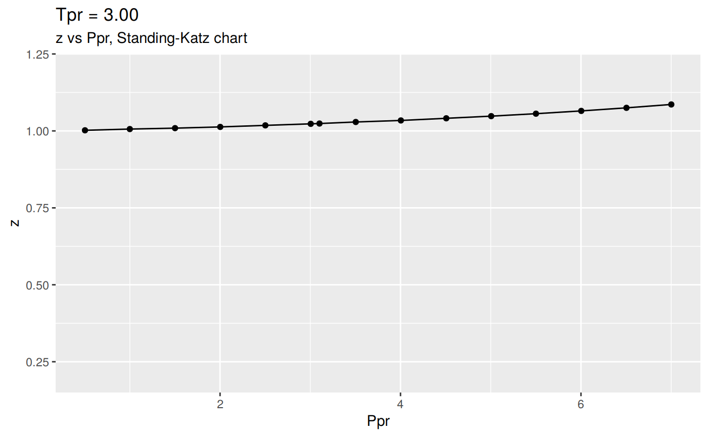
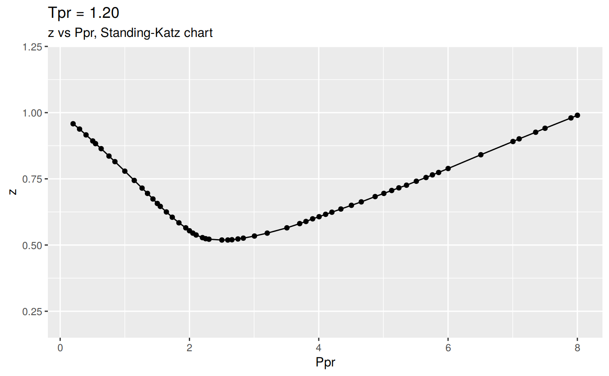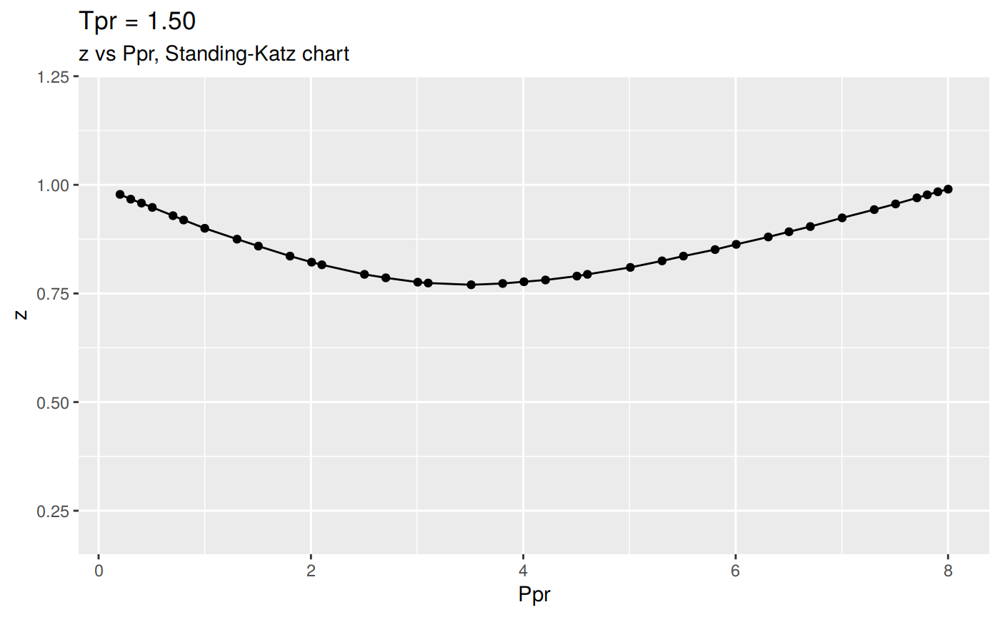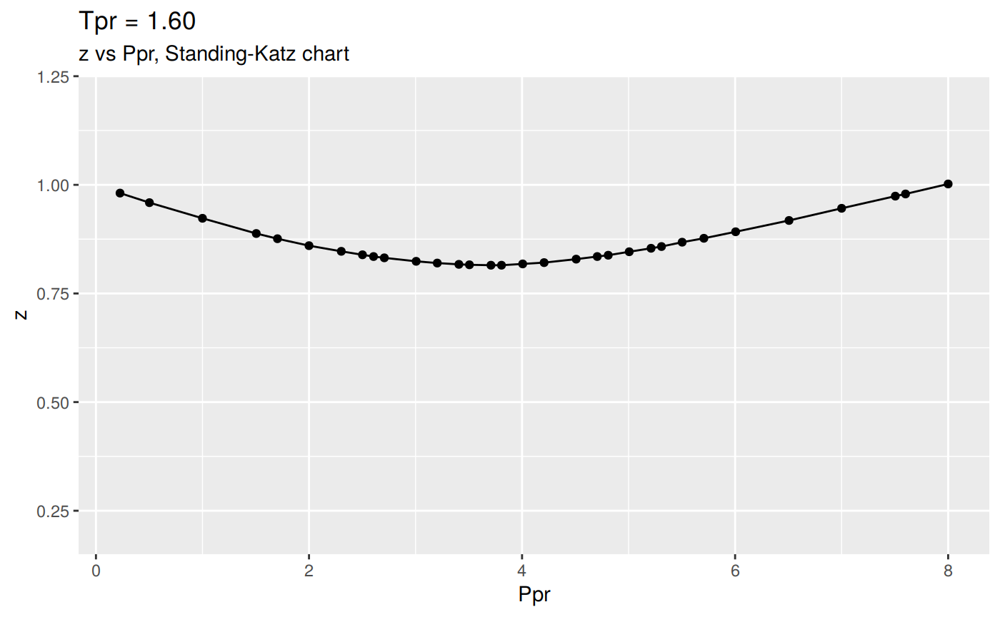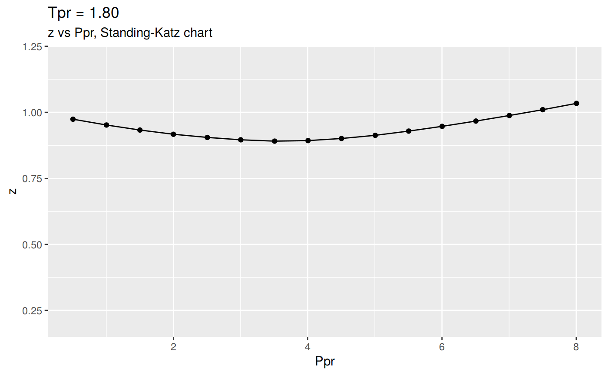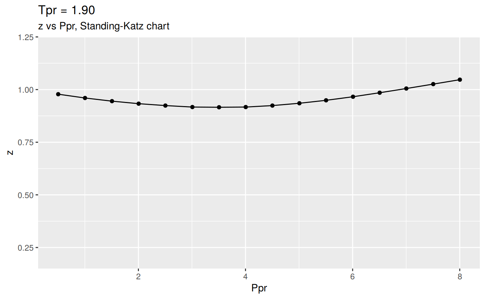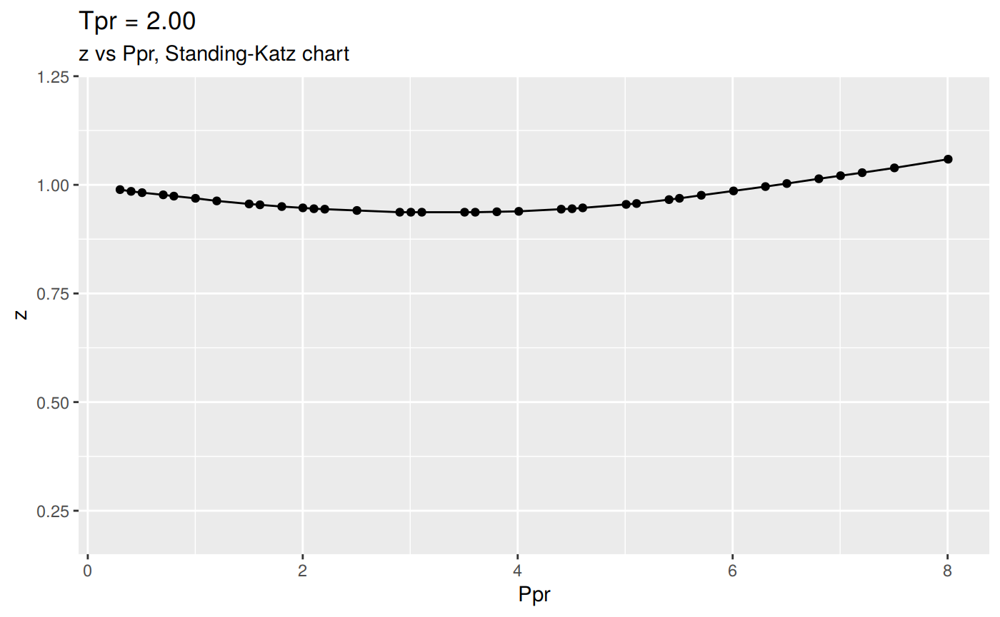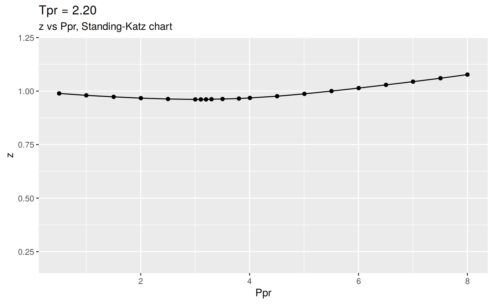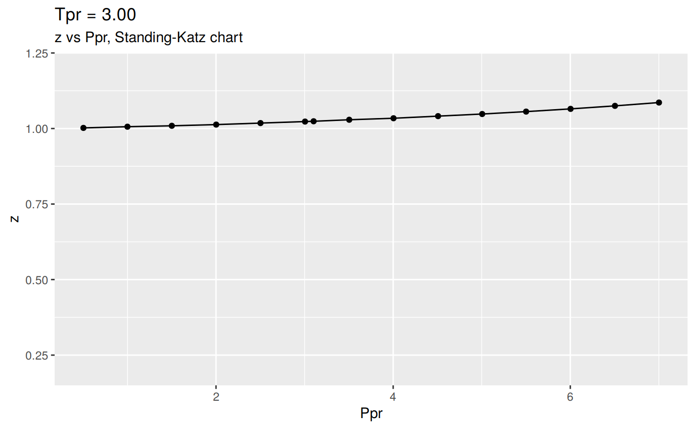
Changing the scale for all the plots
The plotting function in getStandingKatzCurve has a default value for the Y scale of 0.2 to 1.2, just to make the plot uniform. But you can change that.
Let’s say you don’t like the Tpr curve at 1.7 (shown above), just change the ylim parameter:
getStandingKatzCurve(tpr = 1.7, toSave = FALSE, toView = FALSE,
ylim = c(0.8, 1.1))And here is the list of dataframes of the digitized points for the lp Standing-Katz curves:
names(result) [1] "1.05" "1.1" "1.2" "1.3" "1.4" "1.5" "1.6" "1.7" "1.8" "1.9"
[11] "2" "2.2" "2.4" "2.6" "2.8" "3" Getting only the SK data
We have this other simpler function that will return only the data without saving, plotting or viewing the object. It is called getStandingKatzData:
library(zFactor)
tpr_vec <- c(1.05, 1.3, 1.5)
all_tpr2 <- getStandingKatzData(tpr_vec)
names(all_tpr2)[1] "1.05" "1.3" "1.5" Similarly, to what we did with getStandingKatzCurve, we could extract a dataframe for any Tpr:
library(tibble)
as.tibble(all_tpr2[["1.5"]])# A tibble: 37 x 5
Ppr z isNear Ppr_near diff
* <dbl> <dbl> <lgl> <dbl> <dbl>
1 0.202 0.978 TRUE 0.2 0.002
2 0.303 0.967 TRUE 0.3 0.003
3 0.404 0.958 TRUE 0.4 0.004
4 0.506 0.948 TRUE 0.5 0.006
5 0.701 0.929 TRUE 0.7 0.001
6 0.801 0.919 TRUE 0.8 0.001
7 1.000 0.900 TRUE 1.0 0.000
8 1.304 0.875 TRUE 1.3 0.004
9 1.505 0.859 TRUE 1.5 0.005
10 1.803 0.836 TRUE 1.8 0.003
# ... with 27 more rows
Plotting multiple Tpr curves
To be able to plot multiple Tpr curves in one figure we have to convert the multiple dataframes to a tidy dataset. We will take a look on two ways of doing this:
The hard way
Following from the previous example, we have to create a tidy dataset from the list of dataframes.
Let’s plot the curves:
library(data.table)
library(ggplot2)
# join the dataframes with rbindlist adding an identifier column
all_tpr_df <- data.table::rbindlist(all_tpr2, idcol = TRUE)
colnames(all_tpr_df)[1] <- "Tpr" # name the identifier as Tpr
ggplot(all_tpr_df, aes(x=Ppr, y=z, group=Tpr, color=Tpr)) +
geom_line() +
geom_point()The one step way
Using this function multiplotStandingKatz you can achieve the same result:
tpr_vec <- c(1.05, 1.3, 1.5)
multiplotStandingKatz(tpr_vec)
The dots are the digitized points of the Standing-Katz chart.
All the Tpr curves of Standing-Katz chart
Using lapply, getStandingKatzData and data.table::rbindlist:
library(zFactor)
library(ggplot2)
library(data.table)
tpr_vec <- c(1.05, 1.1, 1.2, 1.3, 1.5, 1.6, 1.7, 1.9, 2.0, 2.4, 2.6, 2.8, 3.0)
all_tpr2 <- (lapply(tpr_vec, function(x) getStandingKatzData(tpr = x)))
names(all_tpr2) <- tpr_vec
all_tpr_df <- data.table::rbindlist(all_tpr2, idcol = TRUE)
colnames(all_tpr_df)[1] <- "Tpr"
ggplot(all_tpr_df, aes(x=Ppr, y=z, group=Tpr, color=Tpr)) +
geom_line() +
geom_point()
Or the one-liner:
tpr_vec <- getStandingKatzTpr(pprRange = "lp")
multiplotStandingKatz(tpr_vec)Plotting the low-range Tpr
If you just prefer the low range Tpr curves:
library(zFactor)
library(ggplot2)
library(data.table)
low_tpr_vec <- c(1.05, 1.1, 1.2, 1.3, 1.4)
low_tpr_li <- (lapply(low_tpr_vec, function(x) getStandingKatzData(tpr = x)))
names(low_tpr_li) <- low_tpr_vec
low_tpr_df <- data.table::rbindlist(low_tpr_li, idcol = TRUE)
colnames(low_tpr_df)[1] <- "Tpr"
ggplot(low_tpr_df, aes(x=Ppr, y=z, group=Tpr, color=Tpr)) +
geom_line() +
geom_point()With the one liner:
low_tpr_vec <- c(1.05, 1.1, 1.2, 1.3, 1.4)
multiplotStandingKatz(low_tpr_vec)
The medium-range Tpr curves
library(zFactor)
library(ggplot2)
library(data.table)
med_tpr_vec <- c(1.5, 1.6, 1.7, 1.8, 1.9)
med_tpr_li <- (lapply(med_tpr_vec, function(x) getStandingKatzData(tpr = x)))
names(med_tpr_li) <- med_tpr_vec
med_tpr_df <- data.table::rbindlist(med_tpr_li, idcol = TRUE)
colnames(med_tpr_df)[1] <- "Tpr"
ggplot(med_tpr_df, aes(x=Ppr, y=z, group=Tpr, color=Tpr)) +
geom_line() +
geom_point()The one liner:
med_tpr_vec <- c(1.5, 1.6, 1.7, 1.8, 1.9)
multiplotStandingKatz(low_tpr_vec)
The high-range of Tpr curves
library(zFactor)
library(ggplot2)
library(data.table)
hi_tpr_vec <- c(2.0, 2.4, 2.6, 2.8, 3.0)
hi_tpr_li <- (lapply(hi_tpr_vec, function(x) getStandingKatzData(tpr = x)))
names(hi_tpr_li) <- hi_tpr_vec
hi_tpr_df <- data.table::rbindlist(hi_tpr_li, idcol = TRUE)
colnames(hi_tpr_df)[1] <- "Tpr"
ggplot(hi_tpr_df, aes(x=Ppr, y=z, group=Tpr, color=Tpr)) +
geom_line() +
geom_point()
hi_tpr_vec <- c(2.0, 2.4, 2.6, 2.8, 3.0)
multiplotStandingKatz(hi_tpr_vec)How does the tidy dataframe look
By performing a summary of the tidy dataset we can learn a lot more of the data we are plotting:
- The number of observations or rows is 117
- The Ppr ranges from 0.3 to 8.005
- The z values go from 0.937 to 1.097. This is understandle since we are referring to the high side of the Tpr curves.
- From all the digitized points, only 1 out of 117 was digitized far from the 1/10 grid.
library(tibble)
as.tibble(hi_tpr_df)# A tibble: 117 x 6
Tpr Ppr z isNear Ppr_near diff
<chr> <dbl> <dbl> <lgl> <dbl> <dbl>
1 2 0.300 0.989 TRUE 0.3 -5.551115e-17
2 2 0.403 0.985 TRUE 0.4 3.000000e-03
3 2 0.505 0.982 TRUE 0.5 5.000000e-03
4 2 0.702 0.977 TRUE 0.7 2.000000e-03
5 2 0.801 0.974 TRUE 0.8 1.000000e-03
6 2 1.002 0.969 TRUE 1.0 2.000000e-03
7 2 1.200 0.963 TRUE 1.2 -2.220446e-16
8 2 1.501 0.956 TRUE 1.5 1.000000e-03
9 2 1.602 0.954 TRUE 1.6 2.000000e-03
10 2 1.805 0.950 TRUE 1.8 5.000000e-03
# ... with 107 more rowssummary(hi_tpr_df) Tpr Ppr z isNear
Length:117 Min. :0.300 Min. :0.937 Mode :logical
Class :character 1st Qu.:2.001 1st Qu.:0.981 FALSE:1
Mode :character Median :3.806 Median :1.000 TRUE :116
Mean :3.880 Mean :1.005
3rd Qu.:5.606 3rd Qu.:1.030
Max. :8.005 Max. :1.097
Ppr_near diff
Min. :0.300 Min. :0.000000
1st Qu.:2.000 1st Qu.:0.002000
Median :3.800 Median :0.004000
Mean :3.877 Mean :0.003641
3rd Qu.:5.600 3rd Qu.:0.005000
Max. :8.000 Max. :0.010000 With this we are in a position to compare the original Standing-Katz chart against the most common compresssibility correlations.